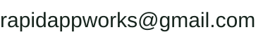

YT Digest Android Privacy Policy
Last updated: September 21, 2026
YT Digest turns available YouTube captions into a readable transcript. It does not require an account or API key.
Transcript Content
YT Digest loads the selected YouTube video and its available captions. The app formats the captions into raw, timestamped, and searchable transcript views on your device.
YT Digest does not send transcript text, transcript searches, video titles, YouTube links, or ChatGPT prompts to RapidAppWorks.
Analytics
YT Digest uses Firebase Analytics to record app launches, whether a video link was opened by sharing or pasting, and whether video and transcript loading succeeded or failed. These events do not contain the video link, video ID, video title, transcript text, search text, or ChatGPT content.
Firebase Analytics may process device and app information as described in Google's Privacy Policy.
Advertising
YT Digest uses Google AdMob to display banner ads. AdMob may process device identifiers, IP address, ad interactions, and diagnostic information to deliver, measure, and protect ads. Details are available in Google's advertising privacy information.
App Features
- YouTube: The app opens the selected video through YouTube to load available captions.
- ChatGPT: The Summarize button opens the ChatGPT Android app with the transcript attached.
- Copy and download: The app can copy transcript text to the Android clipboard or save a text file to Downloads.
Data Stored on Your Device
Transcript processing happens on your device. Android may keep temporary app files used by YT Digest. You can remove app data through Android settings or by uninstalling the app.
Children
YT Digest is not directed to children under 13.
Changes to This Policy
This policy will be updated when the app's data practices change.
Independence
YT Digest is an independent Android app and is not affiliated with, endorsed by, or sponsored by YouTube, Google, OpenAI, or ChatGPT.
Contact
Questions about this policy can be sent to:
